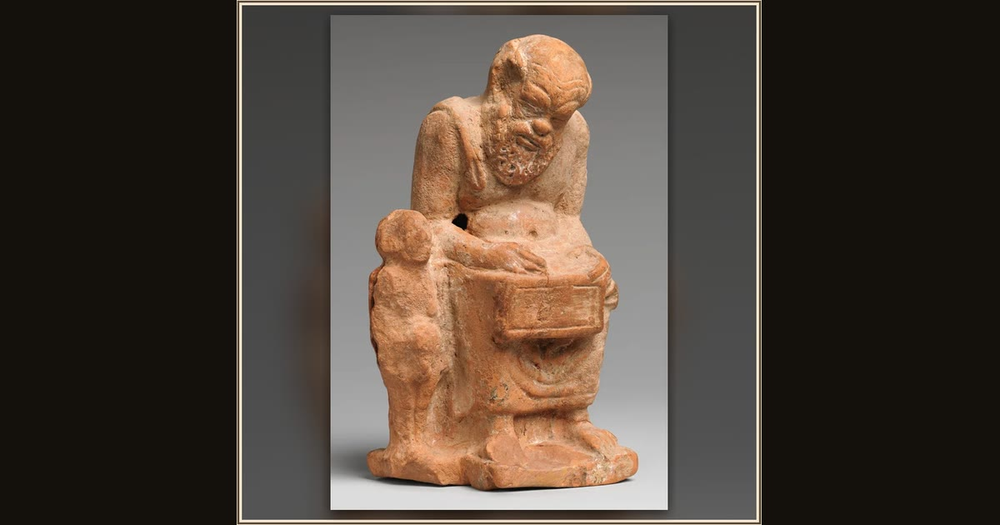

Terracotta statuette of a teacher and a pupil
Greek, Asia Minor, Early Hellenistic · late 4th–early 3rd century BCE · met
A terracotta of a seated, bearded teacher with a tablet on his knees and a small pupil at his side, as the Athenian sends the freeborn child from nurse to tutors and teachers (808e). Explore its place in Plato's Dialogues, Laws · Book VII, section 104.